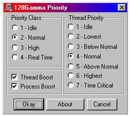

128Gamma allows you to change the ThreadPriority at which it executes.
The ThreadPriority effects only the thread that is used to Encrypt, Decrypt, & Pack, Unpack.
Changing the ThreadPriority will effect the entire operating system, For example : Setting 128Gamma to Highest ThreadPriority will block processor time of programs that are running at a lower priority.
Highest And TimeCritical ThreadPriority are not recomended. TimeCritical PriorityClass Can easily cause the computer to stop responding if 128Gamma runs for more than just a few seconds.
- 128Gamma Priority Utility -

The above utility was installed with 128Gamma and will be in the start menu under the group 128Gamma was installed to. Default: Start > Program > 128Gamma
(Idle)
Indicates a base priority level of 1 for Idle Priority Class, Normal Priority Class, or High Priority Class, and a base priority level of 16 for RealTime Priority Class.
(Lowest)
Indicates 2 points below Normal Priority for the Priority Class.
(Below Normal)
Indicates 1 point below Normal Priority for the Priority Class.
(Normal)
Indicates Normal Priority for the Priority Class.
(Above Normal)
Indicates 1 point above Normal Priority for the Priority Class.
(Highest)
Indicates 2 points above Normal Priority for the Priority Class.
(TimeCritical)
Indicates a base priority level of 15 for Idle Priority Class, Normal Priority Class, or High Priority Class, and a base priority level of 31 for RealTime Priority Class.
Note: PriorityClass & ThreadPriority are not set untill 128Gamma is actually writing to the file.